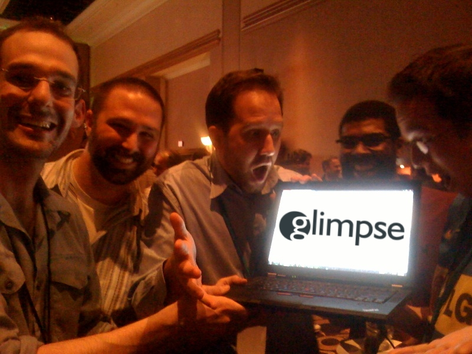
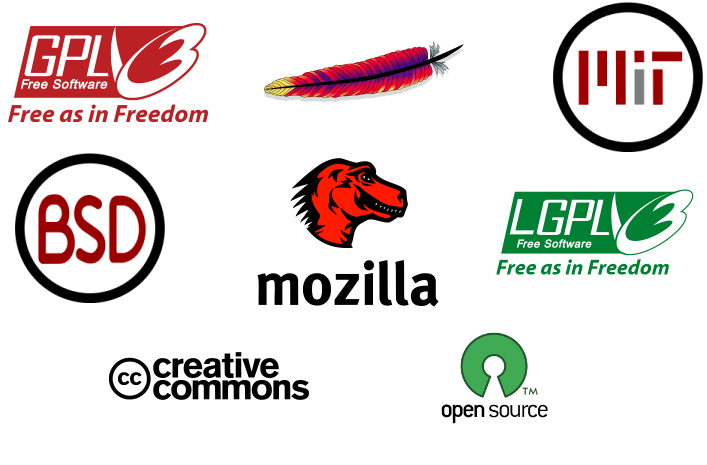
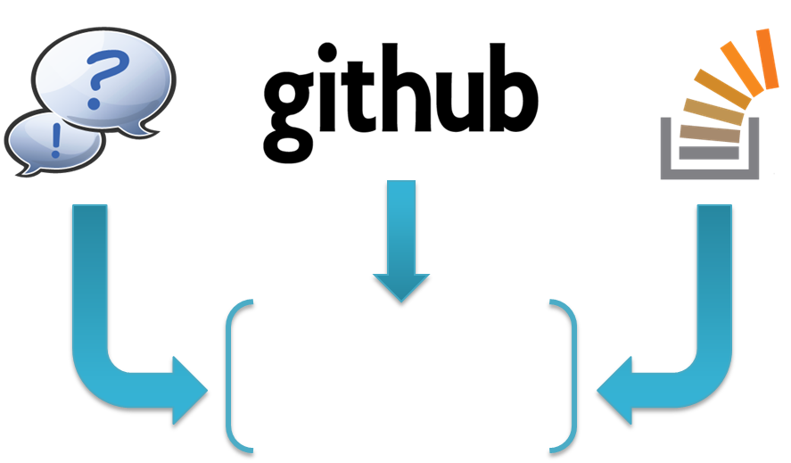
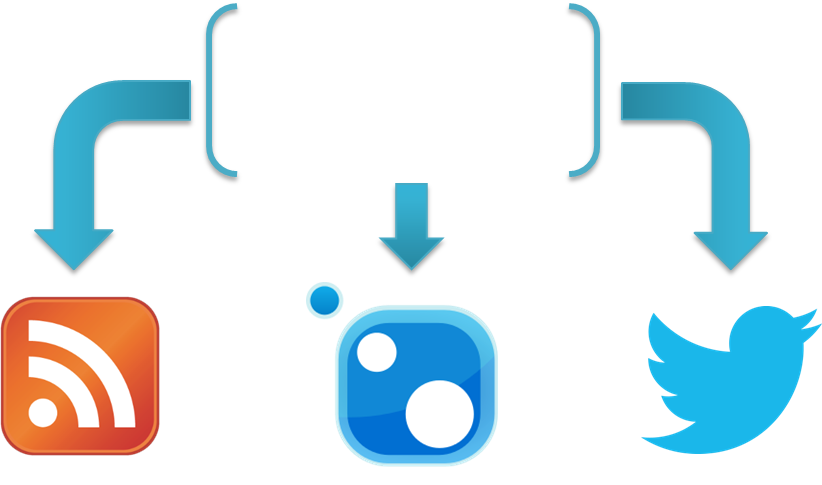
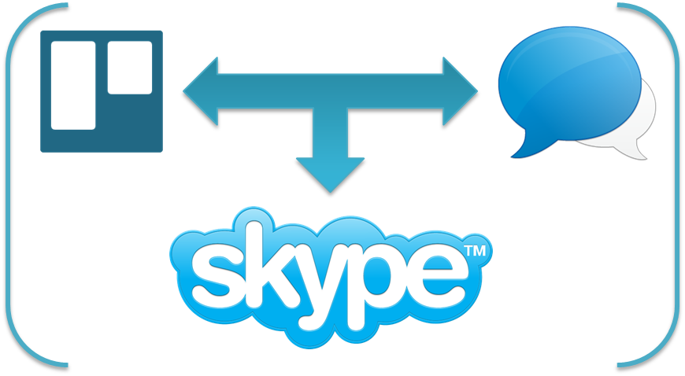
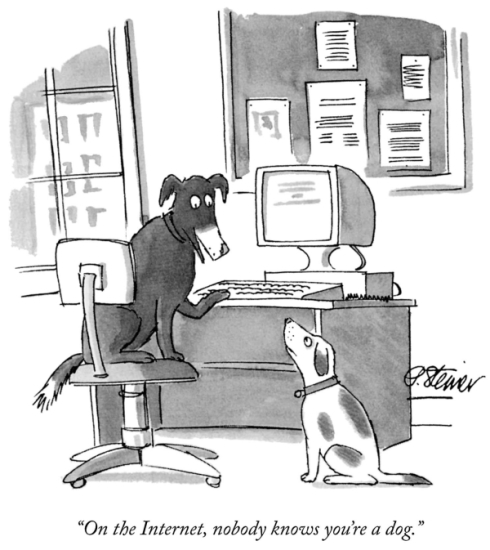
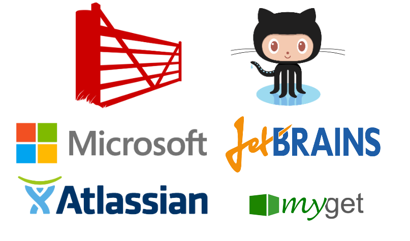
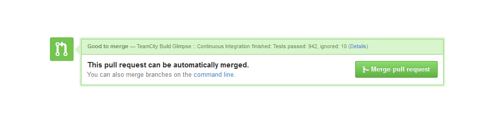
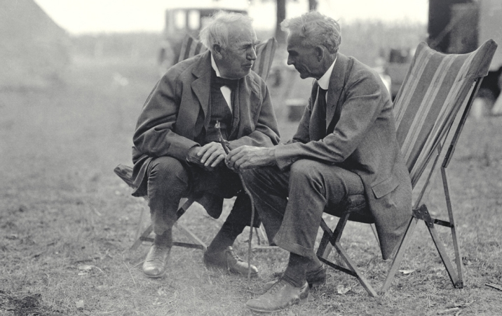

Running OSS Projects
From Zero to Sixty
Who Am I?
Tuckman's Stages
- Forming
- Storming
- Norming
- Performing
Forming
Select a License
tl;dr Legal to the rescue!
Project Setup
- Website
- Mission Statement
- Contributor Guidelines
- Screenshot/Demo
- Consider Forkability
Selecting a Governance Model
Storming
Communication

Incoming

Outgoing

Internal
OSS/Life Balance
Dealing w/ $$$
Avoid Bikeshedding
Fwd bikeshed.com
Nom de plume
Norming
Community Management
Perks
Find more OSSPerks.com
Performing
Automate Everything
Create Opportunity
Jump In Issues
Not running a project?
Questions? Answers?
Coming together is a beginning; keeping together is progress; working together is success.
Thank You!
-
 Logo/Design by @headloose
Logo/Design by @headloose
-
 Jump In by
US Marine Corps
Jump In by
US Marine Corps
-
 Money by
401(K) 2013
Money by
401(K) 2013
-
 Ford & Edison by
Tom Raftery
Ford & Edison by
Tom Raftery